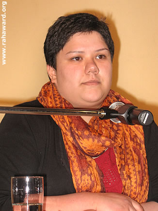
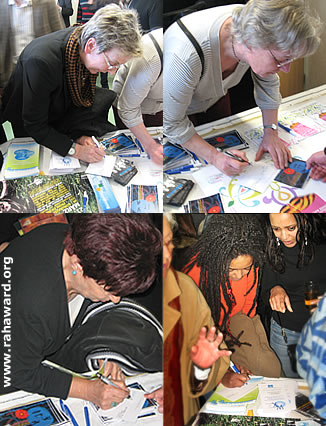
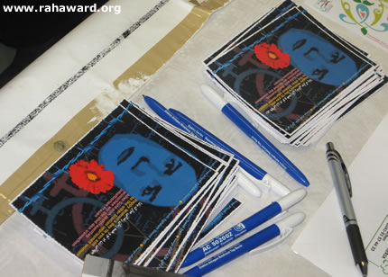

پذيرش > اخبار > مراسم روز جهانی زن در آخن با حضور دلارام علی برگزار شد

 مراسم روز جهانی زن در آخن با حضور دلارام علی برگزار شد مراسم روز جهانی زن در آخن با حضور دلارام علی برگزار شد
20 اسفند 1387 - - نسخه قابل چاپ
ره آورد - عصر روز يکشنبه ۱۸ اسفند ماه برابر با هشتم مارس، يکی از پرشورترين برنامه های روز جهانی زن در شهر آخن برگزار شد.
برای نخستين بار در آخن به کوشش خانم ها، هايکه کسلر ويرتس، مدير نهاد غيردولتی «کارگاه فرهنگ ها» و هيلده شايت، شهردار شهر، از حزب سبزهای آلمان و همياری کانون ره آورد، يکی از فعالين جنبش زنان در ايران مهمان جشن روز جهانی زن بود.
دلارام علی، فعال جنبش زنان و از اولين اعضای کمپين يک ميليون امضا با حضور خود در شهر آخن و طرح مسائل زنان ايران و فعاليت های کمپين يک ميليون امضا تاثير بسزايی در بازتاب وضعيت زنان ايران داشت.
بازتاب گسترده مسائل زنان ايران در آخن
در روز برگزاری مراسم ۸ مارس و روزهای پيش از آن، در چهارچوب اين برنامه، دلارام علی در ملاقات هايی با خانم ها هايکه کسلر ويرتس و هيلده شايت، نهادهای غيردولتی کميته خاور ميانه «انجمن جايزه صلح آخن»، سايت اينترنتی Eine Welt Forum و همچنين نشست مطبوعاتی خود با روزنامه اصلی شهر آخن، به نام «آخنر ناخريشتن» به معرفی کمپين يک ميليون امضا، وضعيت زنان ايران، مشکلات و دستاوردهای جنبش زنان پرداخت.
روزنامه اصلی شهر آخن گفتگوی دلارام علی را روز شنبه ۱۷ اسفند (۷ مارس)، در روزی که معمولا پرفروش ترين روز هفته برای اين روزنامه به شمار می رود؛ در صفحه دوم خود و به همراه گزارش حضور شيرين عبادی در دوسلدورف، منتشر کرد. بدين ترتيب صفحه دوم اين روزنامه کاملا به موضوع زنان و حقوق بشر در ايران اختصاص يافت. اين در حالی بود که بزرگ ترين تصوير صفحه نخست نيز به زنان ايران اختصاص يافته بود.
صفحه دوم روزنامه «آخنر ناخريشتن»، گزارش سفر شيرين عبادی به دوسلدورف در بالا و گفتگو با دلارام علی در پايين
دلارام علی در مصاحبه مطبوعاتی خود در تشريح کمپين يک ميليون امضا گفت: جنبش زنان ايران در سال های گذشته از جنبش نخبگان، به جنبش تمام جامعه گسترش يافته است. زنان از همه اقشار، طبقات و گرايشات مختلف؛ از افراد مذهبی تا سکولارها برای دستيابی به خواسته های برابری طلبانه خود به خيابان ها می روند. يکی از نيروهای اصلی اين جنبش را زنان جوان تشکيل می دهند.

او در بخش ديگری از اين مصاحبه گفت: بايد قوانين (نابرابر) تغيير يابند به همين خاطر ما به جمع آوری امضا از ايرانيان مبادرت ورزيديم.
دلارام علی در اين مصاحبه به حضور فعال زنان ايران در عرصه اجتماعی، فشارها و تضييقات مداوم بر زنان، دستگيری خود در ۲۲ خرداد ۱۳۸۵ و حکم صادره از سوی دادگاه نيز اشاره کرد.
بازتاب مسائل زنان ايران در مطبوعات شهر سبب شد تا مراسم روز جهانی زن در روز يکشنبه با حضور چشمگير شهروندان آخن مواجه شود.
اين برنامه که کار مشترک «کارگاه فرهنگ ها»، کانون ره آورد و انجمن زنان مراکشی در آخن بود با استقبال بی نظيری روبرو گرديد؛ طوری که در سالن برگزاری، ديگر جای نشستن نبود و گروهی از حاضرين ايستاده نظاره گر برنامه بودند.
شهردار آخن:بازگشت دلارام به ايران را پيگيرانه دنبال می کنيم
اجرای مراسم ۸ مارس امسال را خانم هايکه کسلر ويرتس به عهده داشت.
وی در ابتدا ضمن تبريک روز جهانی زن به همه زنان، به معرفی برنامه و سخنرانان آن، خانم ها دلارام علی و ثريا موکت، از مراکش، پرداخت.
هايکه کسلر ويرتس در معرفی دلارام علی، از مشکلات پيش آمده در دريافت رواديد سفر به آخن گفت که بر اثر تلاش های مداوم از سوی «کارگاه فرهنگ ها» و خانم شهردار سرانجام دلارام علی توانست ويزای سفر خود را دريافت کند. وی سپس به آشنايی چند روز پيش خود با دلارام علی اشاره کرد و گفت: «برخورد دلارام و اطمينان و آگاهی ای که بر خواسته های خود دارد تصوير زنان ايران را در نگاه من کاملا دگرگون کرده است.» وی در عين حال از نگرانی عميق خود نسبت به بازگشت دلارام علی به ايران و احتمال تحت پيگرد قرار گرفتن وی سخن گفت.
پس از معرفی مراسم، خانم هيلده شايت، شهردار شهر آخن به روی صحنه رفت و سخنان کوتاهی در باره روز جهانی زن ايراد کرد.
خانم شايت از موقعيت زنان و خشونت ها، تضييقات و فشارهای موجود در کشورهای جهان بر زنان حرف زد و همبستگی خود را با زنانی که در زير بار چنين فشارهايی قرار دارند، اعلام کرد. وی با بيان خوشحالی خود از حضور مردان در اين مراسم به طور ويژه به شرکت دلارام علی در برنامه اشاره کرد. شهردار آخن نيز همچون خانم کسلر ويرتس از بازگشت دلارام علی به ايران سخن گفت. او قاطعانه اعلام کرد که پس از بازگشت، وضعيت دلارام را پيگيرانه دنبال کرده و در صورت هر پيشامدی برای وی از او کاملا پشتيبانی خواهد کرد. اين سخنان خانم شهردار با استقبال و تشويق شرکت کنندگان برنامه مواجه شد.
پس از سخنان هيلده شايت، بخش نخست برنامه آغاز شد.
جنبش زنان مراکش؛ گذشته و حال
بخش اول مراسم، سخنرانی دکتر ثريا موکت، جامعه شناس مراکشی تبار ساکن زاربروکن در باره موقعيت تاريخی و کنونی زنان مراکش، به ويژه پس از رفرم های سال های اخير شاه محمد السادس، پادشاه مراکش بود.
خانم موکت از برلين توانسته بود خود را به مراسم برساند و پس از سخنرانی خود نيز می بايست سالن را ترک کرده و به قطار برگشت برسد.
ثريا موکت بيش از دو سال است که مدير انجمن «رامش، فوروم تلاقی فرهنگی» در زاربروکن آلمان است و در سال ۱۹۸۸ نيز جايزه «خدمات تبادل دانشگاهی آلمان» را دريافت کرده است.
خانم موکت سخنان خود را به زبان آلمانی ايراد کرد و سپس مترجمی خلاصه آن را به زبان عربی برای حاضرين مراکشی ترجمه کرد.
ثريا موکت در رابطه با تلاش های تاريخی زنان مراکشی در راه احقاق حقوق سياسی و اجتماعی برابر در اين کشور از مبارزات استقلال طلبانه مراکش تا رفرم های سال های اخير شاه محمد السادس، پادشاه مراکش سخن گفت.
به گفته اين فعال زن در زمينه سياست بين الملل و تبادلات فرهنگی، آغاز جنبش زنان در مراکش متاثر از کشورهای عربی مسلمان و به ويژه جنبش زنان در مصر، تحت عنوان برابری طلبی در قرن نوزدهم بود. اين جنبش همچون آن چه که در مصر گذشت برخاسته از جنبش استقلال طلبانه بود.
او سپس چهره های اصلی جنبش زنان مصر به ويژه هدی شعراوی (۱۹۲۴ – ۱۸۷۹)، فمينيست و ناسيوناليست معروف مصر و دنيای عرب را معرفی کرد، به کنگره فمينيست های عرب در سال ۱۹۴۴ اشاره نمود و سپس به تاثيرپذيری جنبش زنان مراکش از فعاليت های زنان عرب پرداخت.
وی پس از بررسی تاريخی جنبش زنان مراکش به دوران اخير رسيد و در سخنان خود به فعاليت مشابه کمپين يک ميليون امضای زنان ايران، در مراکش اشاره کرد. اين فعاليت ها به رفرم «حقوق خانواده مراکشی» که به «مودونا» معروف است و تغييراتی در حقوق زنان در مراکش ايجاد کرد مربوط می شد.
وی در اين باره گفت: «برای دستيابی به رفرم در حقوق زنان در قانون "حقوق خانواده مراکشی" (مودونا)، سازمان زنان با نام "آکسيون زنانه" دست به جمع آوری يک ميليون امضا برای تغيير اين قوانين زد. در سال ۱۹۹۳ شخصيت های اسلامی کشور شديدا به جنبش زنان حمله کردند با وجودی که خواسته های آنان کاملا در چهارچوب اسلام مطرح می شدند. چرا که در قانون اساسی مراکش، اسلام، مذهب رسمی کشور اعلام شده و قوانين آن بر اساس تعاليم اسلامی وضع شده اند. پس از آن شاه حسن دوم (۱۹۹۹ – ۱۹۲۹) به عنوان "امير المؤمنين"، قدرت برتر مذهبی، شخصا در اين موضوع دخالت کرد و در سال ۱۹۹۳ اين حقوق را بر اساس برداشت خود مدرنيزه کرد. ولی اين تغييرات چنان ناچيز بودند که به سرخوردگی سازمان های زنان منجر گرديد. اما زنان مراکش هيچ گاه تسليم نشدند. با اين وجود چنين اصلاحاتی برای زنان گامی به پيش به شمار می رفت زيرا "تقدس" مودونا توسط اين تغييرات برچيده شد.»
دکتر موکت در بخش ديگری از سخنان خود گفت: «سازمان های زنان فعاليت های خود را دنبال کرده و پيش بردند و در همين راستا از تغييرات سياسی کشور در سال ۱۹۹۸ بهره بردند. برای نخستين بار پس از استقلال کشور در سال ۱۹۵۶، حزب سوسيال دمکرات (USFP) که با احزاب چپ ديگر ائتلاف کرده بود در مراکش به قدرت رسيد. اين تغيير در قدرت سياسی منجر به اين شد که وزارت خانواده، جوانان و جامعه با همکاری سازمان های زنان، حقوقدانان، سازمان های مدافع حقوق بشر، پژوهشگران و دانشمندان و همچنين بخش های زنان احزاب، بر روی طرح مشترک رفرم کار کردند. در ماه مارس ۱۹۹۹ وزارت خانواده، جوانان و جامعه اين طرح رفرم را با عنوان «طرح رفرم برای تطبيق زنان در توسعه» ارائه داد. بر اساس اين طرح اصلاحاتی برای زنان در زمينه های آموزش، کار، تندرستی، سياست و حقوق مربوطه در نظر گرفته شد. اين رفرم پس از تصويب آن در ماه فوريه ۲۰۰۴ به مرحله اجرا وارد شد.»
ثريا موکت که تجربه های جالبی از مبارزات زنان در مراکش را بازگو می کرد ادامه داد: «بر اين اساس زنان مراکشی می بايست بر خلاف گذشته از حقوق برابری با مردان در عرصه زندگی زناشويی و خانواده بهره مند شوند.»
وی گفت: «اين محقانه نيست که در اين زمينه اسلام را به تنهايی مسئول بدانيم و تفسيرهای مردسالارانه مرسوم از قرآن را به کار بريم و با دستاويز قرار دادن اين تفسيرها تنها به نيمی از بشر امتياز دهيم.»
خانم موکت در پايان به نابرابری های موجود در قوانين مراکش پرداخت.

در مدت زمان استراحت کارت های تبريکی را که کانون ره آورد به منظور پشتيبانی از عاليه اقدام دوست، تهيه ديده بود در اختيار شرکت کنندگان قرار گرفت تا با امضای خود و ارسال آن به ايران، روز جهانی زن را به اين فعال دربند جنبش زنان تبريک بگويند.
کارت های تبريک روز جهانی زن برای عاليه اقدام دوست
عاليه اقدام دوست از جمله زنانی بود که در روز ۲۲ خرداد ۱۳۸۵ در تجمع اعتراض آميز زنان شرکت کرد و در ميدان هفت تير سوار بر ماشين نيروی انتظامی راهی بازداشتگاه اوين شد و در نهايت شعبه ۱۵ دادگاه انقلاب تهران، وی را به سه سال و چهار ماه حبس و ۲۰ ضربه شلاق محکوم کرد. پس از آن دادگاه تجديد نظر نيز حکم ۳ سال حبس او را تاييد کرد و سرانجام روز ۱۲ بهمن ۱۳۸۷ ماموران اجرای حکم به در منزل وی در شهرستان فومن رفته و وی را تحت الحفظ به شعبه اجرای احکام دادگاه انقلاب تهران برای اجرای مدت محکوميت منتقل کردند.
عاليه اقدام دوست، اولين فعال جنبش زنان است که پس از قطعی شدن حکم خود، به زندان منتقل می شود.

کارت تبريک مزبور به سه زبان فارسی، انگليسی و آلمانی، و به نشانی زندان اوين منتشر شده که چند روز پيش در اختيار همه فعالين زن، نهادها، انجمن ها، کانون ها و افرادی که قصد دارند با ارسال آن به نشانی زندان اوين اعتراض خود را نسبت به حکم صادره برای عاليه اقدام دوست اعلام کنند، قرار گرفت.
استقبال از امضای کارت تبريک برای عاليه اقدام دوست بی نظير بود و بيشتر کارت های چاپ شده امضا شدند. شرکت کنندگان با مليت های مختلف ضمن پرس و جو از وضعيت اين فعال زن با کمال ميل کارت را امضا می کردند. برخی نيز در پشت کارت پيام دوستانه کوتاهی برای او نوشتند.
دلارام علی:نسل من به خانه باز نخواهند گشت
بخش دوم مراسم با فيلمی از سازمان عفو بين الملل در باره کمپين يک ميليون امضای زنان ايران که در انگليس و در اجتماع دانشجويان انگليسی تهيه شده بود و همچنين انيميشينی از اين سازمان در رابطه با جمع آوری امضا برای دفاع از حقوق بشر آغاز شد. موسيقی همراه اين تصاوير سرودهايی از کمپين يک ميليون امضا بود.
آنگاه دلارام علی در ميان تشويق ممتد شرکت کنندگان پشت ميکروفون قرار گرفت و سخنان خود را آغاز کرد. در کنار وی خانم فهيمه فرسايی، نويسنده و روزنامه نگار، به ترجمه سخنان او پرداخت.
دلارام علی ضمن تشکر از دعوت کنندگان گفت: «از صميم قلب خوشحالم که امسال ۸ مارس را در کشوری هستم که خاطره خوب کلارا زتکين را هنوز در خود دارد؛ زنی که اين روز بيش از همه مرهون زحمت اوست.»
وی ادامه داد: «شايد خيلی از شما تعجب کنيد که چرا امروز من برای سخنرانی به اين مراسم دعوت شدم و شايد هم فکر کنيد که من برای اين کار خيلی جوانم. امروز من اين جا هستم تا در رابطه با همين موضوع صحبت کنم؛ در رابطه با نسل من، نسل دختران و پسران جوانی که با شور فراوان به ميدان آمدند و هرگز به خانه بازنخواهند گشت.»
پس از اين مقدمه دلارام علی شمه کوتاهی از تاريخچه برگزاری روز جهانی زن در ايران را ارائه داد و سابقه برگزاری آن را بيش از ۸۰ سال دانست. وی گفت: «در طول هيچ برهه ای از تاريخ ايران حکومت، چه از نوع سکولار و چه از نوع مذهبی روی خوشی به زنان نشان نداده اما آن چه امروز توسط جنبش زنان در ايران شکل گرفته است بيش از هر زمان ديگری غيرقابل انکار است.»
دلارام علی ادامه سخنرانی خود را به کمپين يک ميليون امضا، چگونگی شکل گيری و نوع فعاليت آن و نقش جوانان در اين کمپين اختصاص داد.
وی گفت: «اندکی بيش از ۲ سال پيش در ايران حرکتی شکل گرفت که برای اولين بار سنت مبارزات زنانه را به خيابان ها آورد: مبارزه برای تغيير قوانين تبعيض آميز.»
اين فعال جنبش زنان ايران ايده و طرح شکل گيری کمپين را برگرفته از جنبش زنان مراکش اعلام کرد که البته تفاوت های فرهنگی، اجتماعی و سياسی خاص خود را داشت. همين موضوع باعث شد که وی همکاری مشترک زنان مراکشی در اين مراسم را به فال نيک بگيرد.
او در ادامه به ويژگی های کمپين يک ميليون امضا پرداخت و گفت: «برای من و نسل من وارد شدن به حرکتی از اين جنس، تجربه ای بسيار باارزش است. تجربه فعاليت در حرکتی که رهبر ندارد، ساختارش افقی است و گستره ای به وسعت ايران و گاهی فراتر دارد... چه چيز زنانی را که بارها گرد يکديگر آمده بودند و تجربه های تلخ و شيرينی از فعاليت های مشترک به جا گذاشته بودند در کنار يکديگر نگاه داشت؟ راز اين همدلی را شايد بيش از هر چيز می توان در خواسته محور بودن کمپين ديد. کمپين با بيان خواسته های مشخص و از جنس زندگی روزمره تمام زنان ايران زمين اين فرصت را در اختيار همه گذاشت که فارق از ديدگاه ها و گرايش های فکری خود گردهم بيايند و برای دستيابی به قانونی برابر تلاش کنند.»
دلارام علی به سرلوحه قرار دادن قانون در فعاليت کمپين اشاره کرد و گفت: «تجربه تلخ نابرابری به پشتوانه حمايت قانون، تجربه تلخی بود که زنان ايرانی از سر گذرانده بودند، طعم تلخ نداشتن حق طلاق، حق نگهداری و سرپرستی فرزند، ادامه تحصيل، کار يا سفر برای زنان، طعمی آشنا با تمام لحظه های زندگيشان بود. قانونی که شهادت زنان را ناديده می گرفت، آن ها را برای برخورداری از ارث يا ديه، نصف مردان می ديد، زنان ايرانی را بسيار آزرده بود. پس تغيير قانون سرلوحه فعاليت قرار گرفت چرا که آن چه بر زنان ايرانی می گذشت اگر چه هميشه از جانب قانون نبود اما همواره توسط قانون حمايت می شد. ناديده گرفتن حقوق زنان، خشونت های خانگی و ناموسی اگر چه گاهی توسط پدرها و برادرها و صاحب کارها اتفاق می افتاد اما همواره مورد حمايت قانون بود.»
اين فعال زن که خود به دليل شرکت در تظاهرات مسالمتآميز زنان در تاريخ ۲۲خرداد ۸۵ در ميدان هفتتير تهران، محاکمه گرديد، به حضور جوانان در کمپين و فشارهای پی در پی بر اين جنبش پرداخت و شيوه های گوناگون فعاليت کمپين در مقاطع مختلف را تشريح کرد. او عرصه فعاليت مجازی بر روی اينترنت را يکی از زمينه هايی دانست که جوانان کمپين در آن قابليت های خود را نشان داده اند.
دلارام علی از برخوردهای متفاوت مردم نسبت به کمپين صحبت کرد و گفت: «کمپين با استقبال فراوانی از جانب مردم روبه رو شد اما برخوردها هميشه يکسان نبود. برخی کمپين را بی ثمر می دانستند و جمع آوری امضا برای تغيير قوانين را شيوه ای غيرکارآمد می پنداشتند؛ برخی کمپين را در تضاد با باورهای مذهبی خود می پنداشتند و از امضای آن خودداری می کردند، برخی فشارهای امنيتی را دليل اصلی امضا نکردن خود معرفی می کردند و... اما کمپين با استمرار فعاليت خود يک به يک درها را گشود و با استواری در ادامه راه، مخالفين را متقاعد ساخت. همچنين با دستاوردهايی همچون طرح تغيير قانون ارث و ديه در مجلس و ديگر نهادهای دولتی، فضا تا حدودی به نفع کمپين تغيير کرد. صدای زنان آن قدر بلند بود که ديگر نمی شد گوش ها را گرفت و آن را نشنيد.»
وی از دشواری های کار کمپين نيز سخن گفت. از دستگيری ها، بازجويی ها و تهديدها؛ با اين حال به اعتقاد او هيچ يک از اين اتفاقات باعث توقف اين حرکت نشد.
دلارام علی در انتها به وضعيت عاليه اقدام دوست، هم پرونده ای او در واقعه ۲۲خرداد ۸۵ اشاره کرد و از همه خواست که به سرنوشت وی بی اعتنا نباشند.
با پايان يافتن سخنان دلارام علی، جمعيت حاضر به پاس احترام نسبت به تلاش های اين زن جوان، بپاخاستند و همراه با پخش سرود کمپين يک ميليون امضا با کف زدن های ممتد خود از وی قدردانی کردند.
پس از سخنان دلارام علی، گروه رقص «مژگان» از دوسلدورف با لباس های زيبا و رنگارنگ ايرانی به اجرای رقص های محلی ايران پرداخت و شور و شادی به جمع بخشيد.
جالب اين که اين گروه رقص، متشکل از رقصندگان آلمانی، يونانی و اسپانيايی به خوبی از عهده رقص های ايرانی برآمدند طوری که حاضرين در سالن را به وجد آوردند. سرپرستی اين گروه را خانم مژگان از دوسلدورف به عهده داشت که نزديک به ۲۵ سال است به کار آموزش رقص در دوسلدورف مشغول است.
در انتها بار ديگر خانم هايکه کسلر ويرتس، مجری برنامه، به روی صحنه رفت و روز جهانی زن را به همه زنان تبريک گفت.
بدين ترتيب يکی از پرشورترين برنامه های روز جهانی زن در آخن پايان يافت. تاثير حضور دلارام علی در اين مراسم را می توان در ابراز احساسات خانم هيلده شايت، شهردار آخن، در پايان برنامه شاهد بود. او دقايقی چند دلارام علی را در آغوش فشرد و برايش آرزوی موفقيت کرد.
ارسال به
بالاترین
،
توییتر
،
فریندفید
،
فیسبوک
در همين بخش :
 پروین ذبیحی برنده جایزه حقوق بشری سازمان غيردولتى اتريشى سودويند شد پروین ذبیحی برنده جایزه حقوق بشری سازمان غيردولتى اتريشى سودويند شد
پخش کارت پستال و بروشور در روز جهانی زن در تهران
تمدید زمان برای امضای بیانیهی جمعی از فعالان زن به مناسبت هشت مارس
مجوزی که در نطفه خفه شد
بیش از 2000 امضا در اعتراض به تبعیض های آموزشی به مجلس تحویل داده شد
ديگر بخش ها :
طرح یک میلیون امضا
|
مقالات
|
سایت نوشته ها
|
اخبار
|
گزارش كمپين
|
گفت و گو
|
علیه سکوت
|
كوچه به كوچه
|
نامه های شما
|
گزارش ویژه
|
گفتگو با اعضا
|
ویژه سالگرد کمپین
|
تصویر برابری
|
دل آرام علی
|
تریبون
|
مقالات
|
تاریخ شفاهی
|
خارج از چارچوب
|
کتابخانه
|
درباره کمپین
|
کمپین در شهرها
|
کمپین در بند
|
صدای تغییر
|
ویژه 22 خرداد
|
لایحه حمایت از خانواده
|
گالری
|
عشا مومنی
|
امیر یعقوبعلی
|
خدیجه مقدم
|
راحله عسگری زاده و نسیم خسروی
|
پروین اردلان،جلوه جواهری، مریم حسین خواه، ناهید کشاورز
|
زینب پیغمبرزاده
|
سعیده امین، سارا ایمانیان، محبوبه حسین زاده، ناهید کشاورز و همایون نامی
|
احترام شادفر
|
نسیم سرابندی زاده،فاطمه دهدشتی
|
وبلاگ مهمان
|
پرونده خرم آباد
|
دستگیری ها
|
مریم مالک
|
پرستو اللهیاری
|
مهرنوش اعتمادی
|
سمیه رشیدی
|
Other Languages
|
همراهان
|
«فراخوان کمپین ده روز با بهاره هدایت»
| English
|